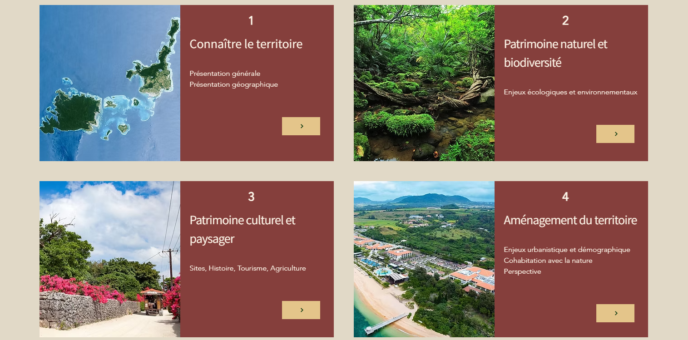

Aller voir des captures d'écran du site

0. Page d'accueil : Qu'est que c'est, un parc national ? un observatoire du territoire ?
1. Connaître le territoire
2. Patrimoine naturel et biodiversité
3. Patrimoine culturel et paysager
4. Aménagement du territoire